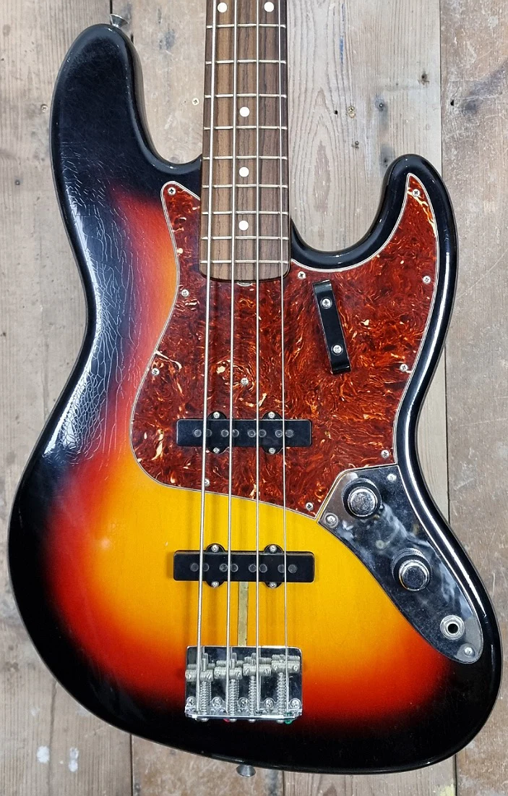
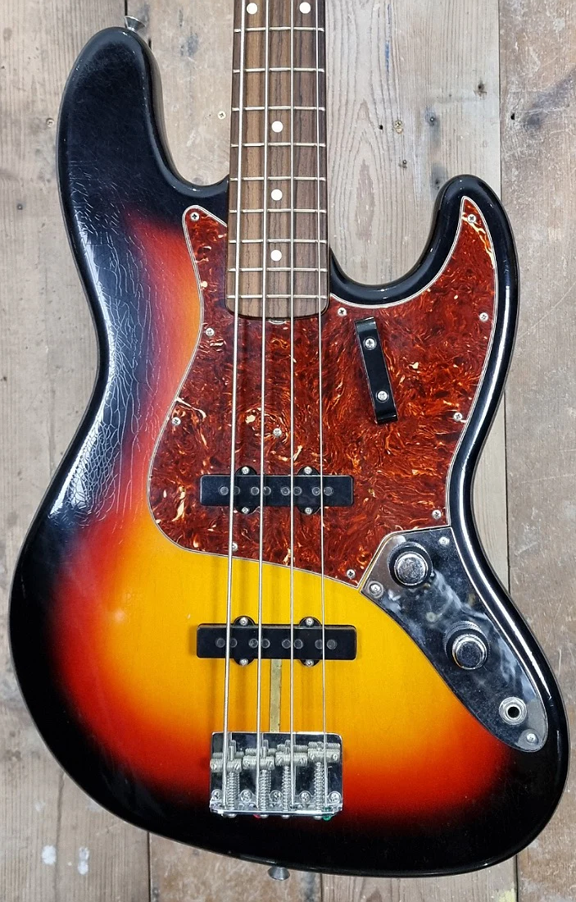

În anii 1930, muzicianul și inventatorul Paul Tutmarc din Seattle, a dezvoltat prima chitară bas. Acesta s-a numit "Model 736 Bass Fiddle". S-au fabricat in jur de 100 exemplare. Basul a fost conceput pentru a fi utilizat în poziție orizontală. Acest instrument pe atunci inovator este considerat a fi cea mai veche chitară bas electrică din istorie și a precedat cu un deceniu și jumătate mult mai celebrul Fender Precision Bass. Tutmarc a fabricat și un amplificator de bas, modelul Audiovox 936. Muzeul EMP din Seattle deține un bas Audiovox 736 original, găsit de istoricul Peter Blecha la sfârșitul anilor 1990.
În anii 1950, Leo Fender și George Fullerton au dezvoltat prima chitară bas electrică produsă în masă. Fender Electric Instrument Manufacturing Company a început să producă Precision Bass, sau P-Bass, în octombrie 1951. Modelul avea un corp simplu, și un pickup cu o singură bobină similar cu cel al unei chitări Telecaster, care a fost ulterior schimbat cu un pickup al cărei bobină este divizată. Precision Bass-ul a jucat un rol revoluționar în muzica anilor '50. Acesta a oferit basistilor o portabilitate sporită și o versatilitate sonoră remarcabilă comparativ cu cea a contrabasul tradițional. În genuri precum rock, R&B și jazz, tonul clar și articulat al Precision Bass-ului a asigurat o prezență ritmică puternică, definind sunetul unei epoci și influențând evoluția ulterioară a muzicii.
Datorită exploziei de popularitate a muzicii rock în anii '60, mulți alți producători au început să producă basuri electrice, printre care Yamaha, Teisco și Guyatone. Introdus în 1960, Fender Jazz Bass, cunoscut inițial ca „Deluxe Bass”, a folosit un design inovator, care a fost văzut pentru prima dată pe chitara Jazzmaster, într-un efort de a îmbunătăți confortul. Astfel a luat naștere Basul Jazz, sau J-Bass care are două pickup-uri cu bobină simplă pentru permite o gamă mai largă de tonuri și o versatilitate muzicală mai mare. Este recunoscut pentru sunetul său clar, articulat și expresiv, devenind rapid favorit în genuri precum jazz, funk și rock progresiv.

 
